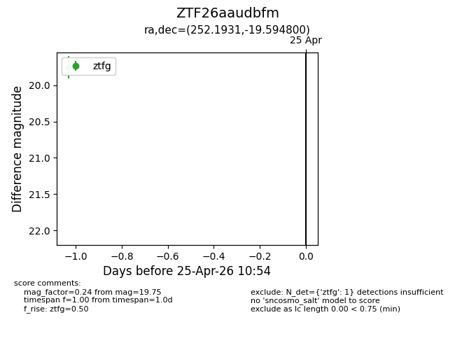
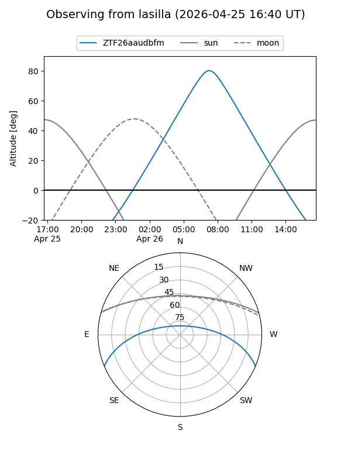
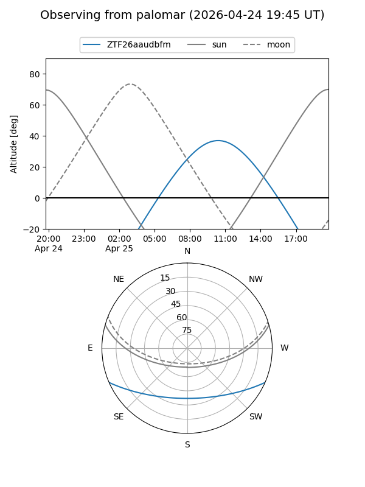

ZTF26aaudbfm
Target ZTF26aaudbfm at 2026-04-25 10:55
Aliases and brokers:
FINK: link
Lasair: link
ALeRCE: link
alt names
ZTF26aaudbfm (ztf,fink_ztf)
Coordinates:
equatorial (ra, dec) = 252.1931,-19.59480
equatorial (HMS+DMS) = 16:48:46.34,-19:35:41.28
galactic (l, b) = (0.3651,+15.94526)
Flags:
Photometry:
last ztfg=19.75
1 ztfg detections
Lightcurve

Visibility


Additional plots